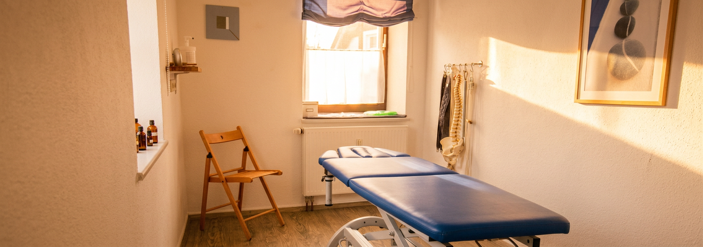

Unsere Praxis in Keltern-Weiler — mit dem gleichen Behandlungsangebot wie in Freiburg im Breisgau.
Obere Dorfstr. 1
75210 Keltern-Weiler
Telefon: 07236 / 980134
E-Mail: info@physiotherapie-schwanke.de
Termine nach Vereinbarung — telefonisch, per E-Mail oder direkt online.
